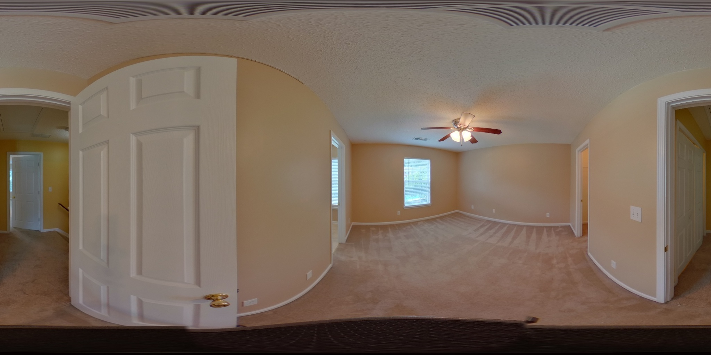
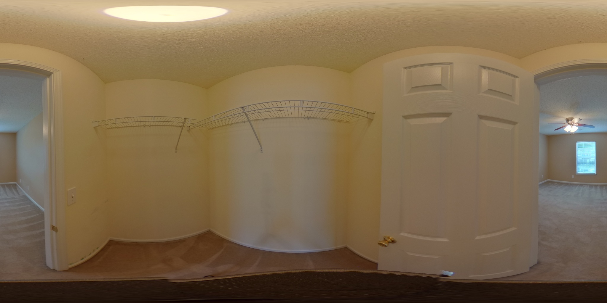
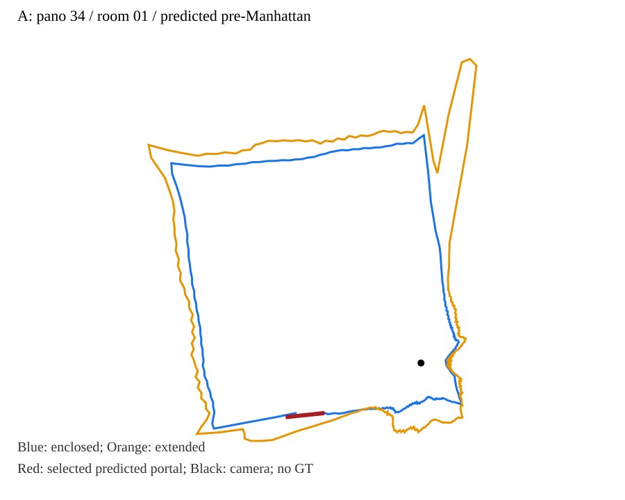
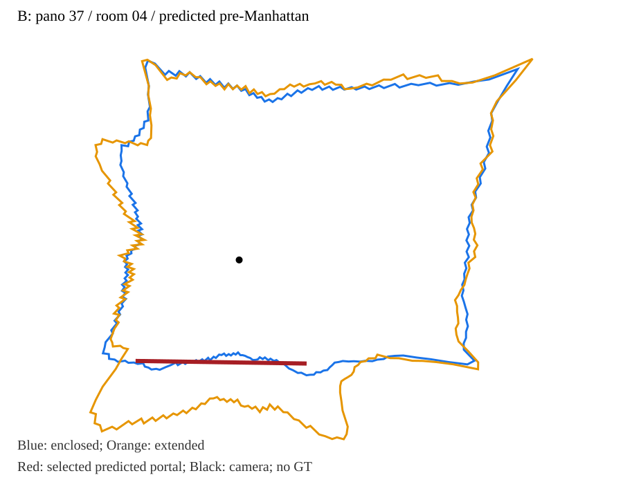
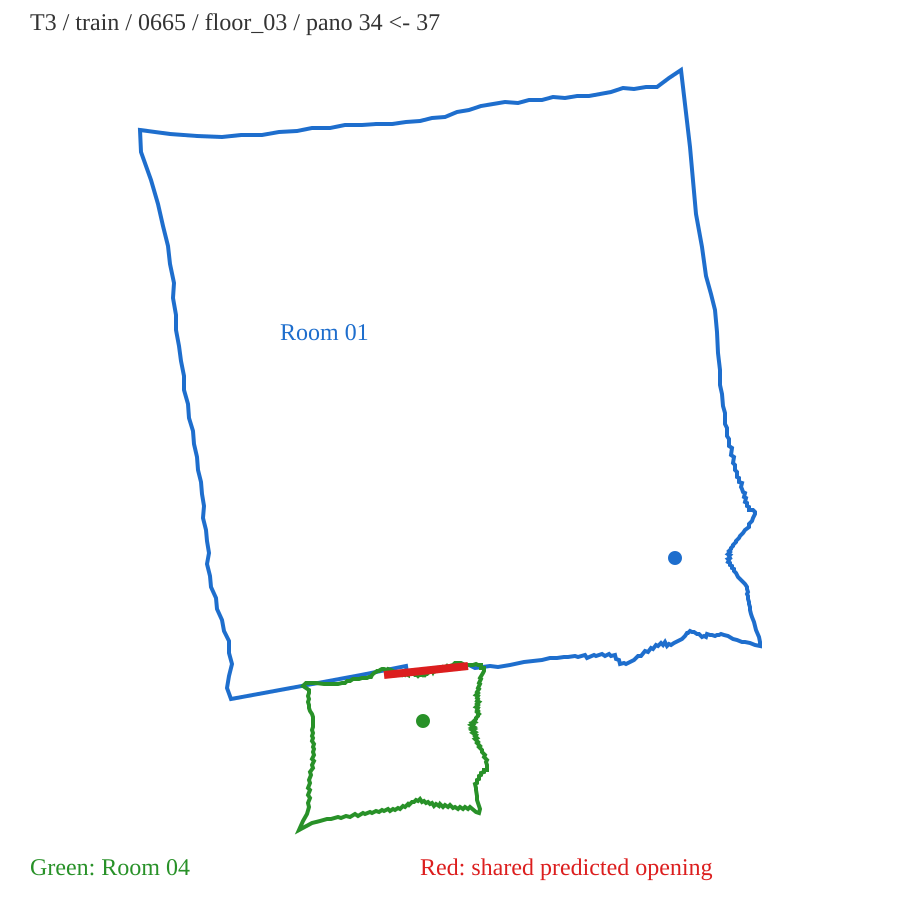

T3 · ZInD train · house 0665 · floor_03。预测 A1–B0，正确候选排名1，分数0.881621（非校准概率）。GT仅用于事后核验；几何仍存在误差。





预测旋转 −173.178°；相对尺度0.780597。旋转误差4.356°，已有记录米制平移误差0.601米。轮廓来自原始输出，仅调整标签位置。
结果摘要 · 文件与口径说明 · 原始结果及GT核验